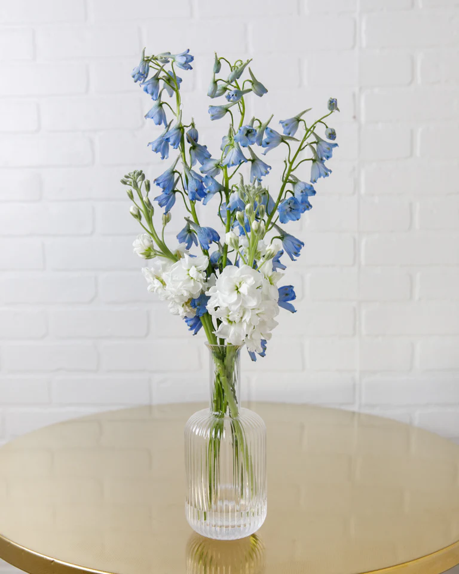
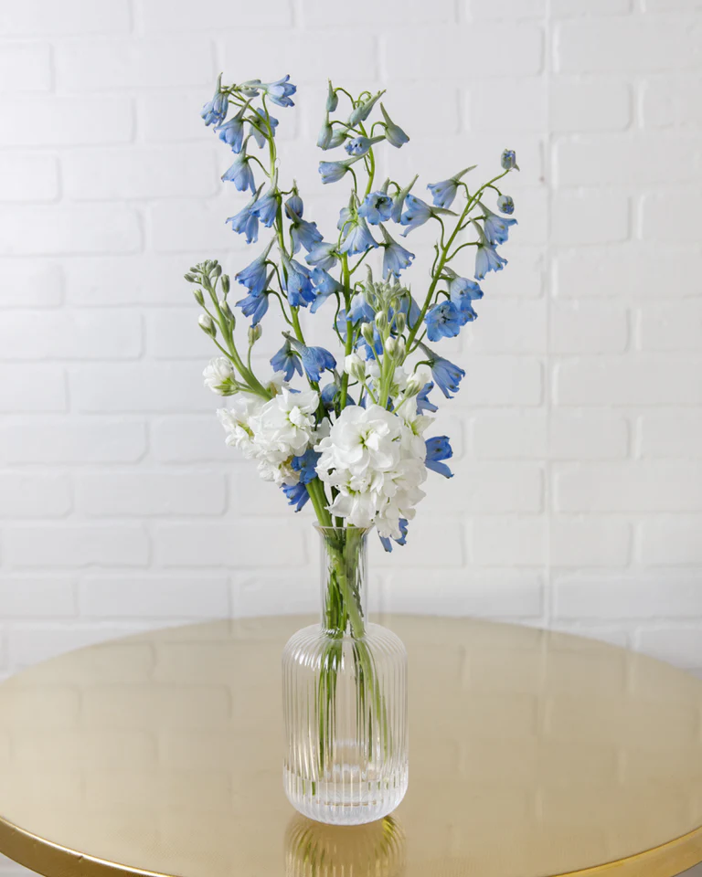

Kali Heaton's Resume
Education
Brigham Young University: Pre-Business Major, Psychology Minor
January 2024 - Current
Experience
Campus Floral
May 2024 - Current
- Organized and oversaw the transportation of dozens of flower arrangements
- Lead training modules for new employees
- Maintain store inventory and cleanliness
- Engage with customers in a friendly, professional manner
The Church of Jesus Christ of Latter-day Saints
May 2021 - October 2022
- Coordinated and accommodated large tour groups in several locations. Provided a unique experience for each demographic relating to local and church-wide history in Missouri
- Organized and held training meetings for other missionaries
Crumbl Cookies, Logan
- Oversaw over 12 other employees as Shift Lead
- Maintained store standards
- Managed both kitchen and customer needs
Skills
- Problem Solving
- Collaboration
- Conflict Resolution
- Creative Thinking